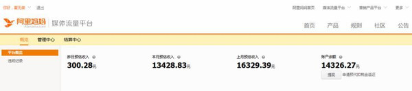

你，生命中最重要的过客，之所以是过客，因为你未曾为我停留。网站首页留言板
淘宝客--通过微信精准粉丝
发布时间：2016-04-24 16:43:10编辑：admin阅读（100）
简单举个例子。如果你是卖奶粉的，有10000个妈妈客户加了你的微信，你每天都能从微信上接到N多的订单。而且你还可以针对你的客户人群，不断的去卖各种妈妈们需要用到的产品，尽情的开发他们的需求。如果你有10个10000粉丝的妈妈号呢?那会如何?
 当然，这是目前淘宝联盟的做法，我们没有淘宝店，我们没有客户群那怎么办?没关系，可以从淘宝客开始!淘宝客不用有自己的货源，只要找到在淘宝商品库里找到好的商品，把用户引进来就可以了，后续的发货和售后服务都不用你负责!风险和成本几乎是0!
那么又有人会问，现在淘宝商品分享到微信，都直接屏蔽，有个毛用?
那我告诉你，你又out了，阿里妈妈官方最近上线的淘宝联盟APP 3.0版本，专门给淘宝客用的，分享到微信可以直接打开，已经解决了屏蔽问题。各大应用市场搜索“淘宝联盟”都可以下载。下面给大家分享两个吸引精准微信粉丝的方法!
微信如何吸引精准粉丝方法一
举例，你现在想做母婴产品。那么你的客户群就要锁定妈妈群体。妈妈群体太大了，到处都能找到精准的粉丝。那么他们在哪里?我给你们举一个最简单的网站。
也就是你不需要担心被封账号，担心被删除。里面有各种各样的板块，比如(打折情报站)(全球代购)(二手闲置)(母婴闲置)这些板块都是商家再卖产品，妈妈们在挑选产品。
举个很简单的方法，你可以去58同城找一些二手的产品，然后发布在这些论坛上，留下你的微信号。只要价格足够诱惑，一定会有很多人加你，而加了你以后，你可以说很抱歉，已经被别人买了。各种各样的板块，都可以发帖，你可以看看别人是如何发帖的，模仿就行。我们的目的不是为了在这里成交，而是圈微信粉丝。
微信如何吸引精准粉丝方法二
第二个方法就是，通过QQ吸引!分享一下我前阶段测试过的一个方法。我用一个全新的QQ，去加妈妈群，你肯定不敢想象，我加了7个群，有6个群通过了我的申请。我是如何做到的呢?
第一步，不要加全国性的群，要加地区群，比如你可以搜索 北京妈妈 上海妈妈 广州妈妈。这样的群非常多，每个群都有几百个妈妈，有些群非常严格，必须要求你把小孩子的出生日期都备注好。说明里面的客户群非常的精准，是我们想要的那种人群。
第二步，如果我要把北京的群加满，我就会先自己的资料改成女头像，性别写女的。年龄写27左右。地区一定是写北京，然后其他资料完善一下。
第三步，最核心的一点，就是你的个性签名，如果你自己做过群，你一定有这种习惯，就是新加入的人，你一定回去看看他的资料，是不是来发广告的。所以为了掩盖这一点，我把我的个性签名改了，写上：有了小孩压力真大，我改怎么办呢!求同情。
这句话太重要了，百分之90的群主，都以为我是妈妈，不是发广告的。然后我加了7个群，6个瞬间就通过了。进群了就要给大家打声招呼，跟群里的人闲聊闲聊，不要潜水。然后就是我以前说过的那招，擒贼先擒王。挨着去找群主，跟群主聊，告诉群主，你是一个妈妈，但是你在兼着做一些小生意，也挺不容易的。能否在公告的地方写个广告?比如每个月给你冲点话费?(不能保证每个群主都愿意，但是一定有愿意的)关键是看你如何说服群主。如果群主投降了，意外着你长期拥有了一个人气火爆的精准妈妈群，群主会帮你把群里的人引到微信上。所以你根本不需要去发广告，引来别人的反感，要学会合作。
有了粉丝以后，如何变现?
当你通过这样的方式引来了粉丝以后，就意味着你可以开始赚钱了。怎么赚钱呢?打开淘宝联盟APP，直接用淘宝账号登陆就可以。选择一些高佣金高转化的商品。比如我搜索进口奶粉，会出来很多淘宝的商品，佣金大多有几十块。

我选一款，附上自己的心得推荐，直接分享到微信就好。现在通过这个渠道分享到微信，是可以直接打开的，这意味着转化率大大提升。
记住，微信朋友圈是熟人关系，千万不要和微商一样一味的刷屏，那样会引来两种结果：第一种是被举报，封号。第二种是被屏蔽，或者令人反感，很少有人买你的产品。所以，你要学会贡献价值，比如你可以把网上一些精彩的育儿问答内容分享到朋友圈。把你的朋友圈变成一个媒体，一个妈妈人群会喜欢的媒体，有了信任感，你分享的产品他们才会买单。